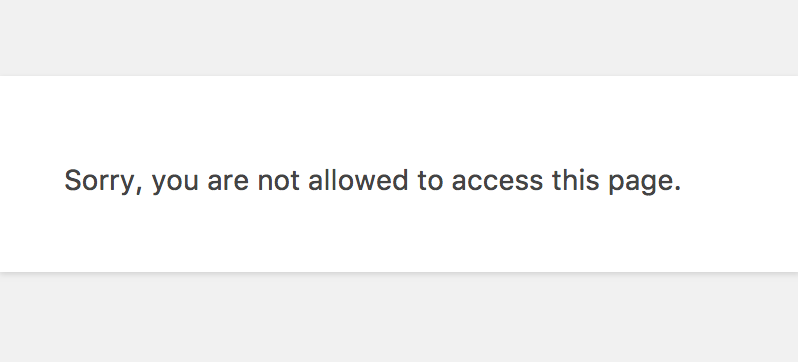

Capability-Driven Development
A presentation by @felixarntzDefinitions
Capabilities in WordPress describe certain tasks
a user may or may not be allowed to perform.
Roles in WordPress are responsible for determining
which capabilities a user has or does not have.
WordPress Capabilities
readedit_postsupload_filesmanage_categoriesmanage_options- ...
Custom Capabilities
read_ct_tutorialsedit_ct_tutorialsmanage_ct_options- ...
Why worry about capabilities?
- Security: Don't give access to someone who shouldn't have access.
- Usability: Only show the areas which the user actually needs.
- Customizability: Allow other developers to tweak access to your functionality.
Internals: The options Table
The available roles for a site are stored in the options database table
as a serialized array.
The capabilities that a specific role grants are also part of that array.
array(
'administrator' => array(
'name' => 'Administrator',
'capabilities' => array(
'switch_themes' => true,
'edit_themes' => true,
'activate_plugins' => true,
'edit_plugins' => true,
'edit_users' => true,
'edit_files' => true,
'manage_options' => true,
'moderate_comments' => true,
'manage_categories' => true,
'manage_links' => true,
'upload_files' => true,
'import' => true,
'unfiltered_html' => true,
'edit_posts' => true,
'edit_others_posts' => true,
'edit_published_posts' => true,
'publish_posts' => true,
'edit_pages' => true,
'read' => true,
'edit_others_pages' => true,
'edit_published_pages' => true,
'publish_pages' => true,
'delete_pages' => true,
'delete_others_pages' => true,
'delete_published_pages' => true,
'delete_posts' => true,
'delete_others_posts' => true,
'delete_published_posts' => true,
'delete_private_posts' => true,
'edit_private_posts' => true,
'read_private_posts' => true,
'delete_private_pages' => true,
'edit_private_pages' => true,
'read_private_pages' => true,
'delete_users' => true,
'create_users' => true,
'unfiltered_upload' => true,
'edit_dashboard' => true,
'update_plugins' => true,
'delete_plugins' => true,
'install_plugins' => true,
'update_themes' => true,
'install_themes' => true,
'update_core' => true,
'list_users' => true,
'remove_users' => true,
'promote_users' => true,
'edit_theme_options' => true,
'delete_themes' => true,
'export' => true,
),
),
'editor' => array(
'name' => 'Editor',
'capabilities' => array(
'moderate_comments' => true,
'manage_categories' => true,
'manage_links' => true,
'upload_files' => true,
'unfiltered_html' => true,
'edit_posts' => true,
'edit_others_posts' => true,
'edit_published_posts' => true,
'publish_posts' => true,
'edit_pages' => true,
'read' => true,
'edit_others_pages' => true,
'edit_published_pages' => true,
'publish_pages' => true,
'delete_pages' => true,
'delete_others_pages' => true,
'delete_published_pages' => true,
'delete_posts' => true,
'delete_others_posts' => true,
'delete_published_posts' => true,
'delete_private_posts' => true,
'edit_private_posts' => true,
'read_private_posts' => true,
'delete_private_pages' => true,
'edit_private_pages' => true,
'read_private_pages' => true,
),
),
'author' => array(
'name' => 'Author',
'capabilities' => array(
'upload_files' => true,
'edit_posts' => true,
'edit_published_posts' => true,
'publish_posts' => true,
'read' => true,
'delete_posts' => true,
'delete_published_posts' => true,
),
),
'contributor' => array(
'name' => 'Contributor',
'capabilities' => array(
'edit_posts' => true,
'read' => true,
'delete_posts' => true,
),
),
'subscriber' => array(
'name' => 'Subscriber',
'capabilities' => array(
'read' => true,
),
),
);Internals: The usermeta Table
The roles that a user has are stored in the usermeta database table
under that user's ID, also as a serialized array.
Additional capabilities can theoretically also be part of that array,
independent of roles.
array(
'editor' => true,
);Guidelines for Plugin Developers
- Check for capabilities, don't worry about roles.
- Never add capabilities to the database, unless you introduce an entire new role.
- Use custom capabilities for your code instead of existing core capabilities.
Checking for Capabilities
current_user_can( string $capability )
or
user_can( int|WP_User $user, string $capability )
Types of Capabilities
- Primitive Capabilities
- Meta Capabilities
Primitive Capabilities
- general capabilities
- either granted via a role from the database or via the
user_has_capfilter
current_user_can( 'edit_posts' )current_user_can( 'activate_plugins' )Meta Capabilities
- capabilities specific to a certain item (an object ID, a string identifier, ...)
- mapped to one or more primitive capabilities via the
map_meta_capfilter
current_user_can( 'edit_post', $post_id )current_user_can( 'activate_plugin', $plugin_basename )Special Capabilities
The following two capabilities have special handling:
exist: Everybody has this capability, even non logged-in users.do_not_allow: Nobody has this capability, not even super admins.
Naming Conventions
{action}_{items} for primitive capabilities
{action}_{item} for meta capabilities
Internals: Flow for Checking for a Capability
-
Check for a capability
current_user_can() -
Check if it is a meta capability and map it to its required primitive capabilities
map_meta_cap()→apply_filters( 'map_meta_cap' ) -
Run logic to alter the user's primitive capabilities from the database
apply_filters( 'user_has_cap' ) - If the user's primitive capabilities now include all required primitive capabilities, they can proceed.
Managing Capabilities
in your Plugins
Our Small Plugin: "Capability Tutorials"
github.com/felixarntz/capability-tutorials

- adds a tutorial post type
- adds a settings screen with some options
to customize the behavior of the post type

Checking for Capabilities
current_user_can( string $capability )
developer.wordpress.org/reference/functions/current_user_can/
function ct_add_settings_page() {
$hook_suffix = add_submenu_page(
'edit.php?post_type=' . CT_POST_TYPE_SINGULAR,
__( 'Tutorial Settings', 'capability-tutorials' ),
__( 'Settings', 'capability-tutorials' ),
'manage_ct_options',
'ct_settings_page',
'ct_render_settings_page'
);
add_action( "load-{$hook_suffix}", 'ct_initialize_settings_page' );
}
add_action( 'admin_menu', 'ct_add_settings_page' );add_menu_page() and add_submenu_page() are examples where you have to specify a capability. WordPress will internally use current_user_can() there.
Without Capability Checks
function ct_initialize_settings_page() {
add_settings_field( 'rewrite_slug', __( 'Rewrite Slug', 'capability-tutorials' ), 'ct_render_settings_page_rewrite_slug_field', CT_OPTION_GROUP, 'default', array(
'label_for' => 'ct-rewrite-slug',
) );
add_settings_field( 'supports', __( 'Supported Features', 'capability-tutorials' ), 'ct_render_settings_page_supports_field', CT_OPTION_GROUP, 'default' );
add_settings_field( 'has_archive', __( 'Archive', 'capability-tutorials' ), 'ct_render_settings_page_has_archive_field', CT_OPTION_GROUP, 'default' );
}With Capability Checks
function ct_initialize_settings_page() {
if ( current_user_can( 'manage_ct_option', 'ct_rewrite_slug' ) ) {
add_settings_field( 'rewrite_slug', __( 'Rewrite Slug', 'capability-tutorials' ), 'ct_render_settings_page_rewrite_slug_field', CT_OPTION_GROUP, 'default', array(
'label_for' => 'ct-rewrite-slug',
) );
}
if ( current_user_can( 'manage_ct_option', 'ct_supports' ) ) {
add_settings_field( 'supports', __( 'Supported Features', 'capability-tutorials' ), 'ct_render_settings_page_supports_field', CT_OPTION_GROUP, 'default' );
}
if ( current_user_can( 'manage_ct_option', 'ct_has_archive' ) ) {
add_settings_field( 'has_archive', __( 'Archive', 'capability-tutorials' ), 'ct_render_settings_page_has_archive_field', CT_OPTION_GROUP, 'default' );
}
}What?
→ You still need to grant the capabilities appropriately!
Granting Primitive Capabilities
apply_filters( 'user_has_cap', array $allcaps, array $caps, array $args, WP_User $user )
function ct_maybe_grant_capabilities( $allcaps ) {
// Allow managing plugin options depending on the user having the 'manage_options' capability.
if ( isset( $allcaps['manage_options'] ) ) {
$allcaps['manage_ct_options'] = $allcaps['manage_options'];
}
return $allcaps;
}
add_filter( 'user_has_cap', 'ct_maybe_grant_capabilities' );What?
→ You still need to map the meta capabilities to primitive capabilities!
Mapping Meta Capabilities
apply_filters( 'map_meta_cap', array $caps, string $cap, int $user_id, array $args )
function ct_map_meta_capabilities( $caps, $cap, $user_id, $args ) {
switch ( $cap ) {
// Maps the meta capability for a single option to the primitive capability for options.
case 'manage_ct_option':
$caps = array( 'manage_ct_options' );
break;
}
return $caps;
}
add_filter( 'map_meta_cap', 'ct_map_meta_capabilities', 10, 4 );So what's the benefit of all that?
While the default behavior may not be much different compared to if you had not used custom capability checks, you allow other developers to improve:
- Security
- Usability
- Customizability
Example 1
Instead of using the user_has_cap filter to grant capabilities, add a custom "Tutorial Manager" role and only grant the capabilities to users of that role.
function mysetup_add_tutorial_manager_role() {
add_role( 'tutorial_manager', __( 'Tutorial Manager', 'my-setup' ), array(
'edit_ct_tutorials' => true,
'edit_others_ct_tutorials' => true,
'publish_ct_tutorials' => true,
'read_private_ct_tutorials' => true,
'create_ct_tutorials' => true,
'edit_private_ct_tutorials' => true,
'edit_published_ct_tutorials' => true,
'delete_ct_tutorials' => true,
'delete_others_ct_tutorials' => true,
'delete_private_ct_tutorials' => true,
'delete_published_ct_tutorials' => true,
'read_ct_tutorials' => true,
'manage_ct_options' => true,
) );
}
register_activation_hook( __FILE__, 'mysetup_add_tutorial_manager_role' );
remove_filter( 'user_has_cap', 'ct_maybe_grant_capabilities' );Example 2
When in a multisite, allow changing the rewrite slug only to the network administrator (or someone else who has the manage_network_options capability).
function mysetup_tweak_rewrite_slug_capability( $caps, $cap, $user_id, $args ) {
if ( 'manage_ct_option' === $cap ) {
$caps = array( 'manage_ct_options' );
if ( ! empty( $args ) && 'ct_rewrite_slug' === $args[0] && is_multisite() ) {
$caps[] = 'manage_network_options';
}
}
return $caps;
}
add_filter( 'map_meta_cap', 'mysetup_tweak_rewrite_slug_capability', 11, 4 );Thank you!
Felix Arntz
Plugin Developer / Core Committer / Freelancer
Further Resources
- It's easily possible to use granular capabilities for your custom post type during post type registration. Learn more on that by looking at our example plugin github.com/felixarntz/capability-tutorials.
- Unfortunately, WordPress core itself does not a great job of handling capabilities granularly enough in several areas. There are several tickets to improve that though which you can find at core.trac.wordpress.org/query?keywords=~granular-capabilities.
- If you're using a multisite, you may have encountered the term "Super Admin" or "Network Administrator". However, this is not an actual role, it is simply an option, and whichever user it applies to, that user can do everything. Except
do_not_allow, of course. - There is an experimental plugin for implementing actual network roles for multisite in WordPress, to add support for granular handling on the network level as well. See github.com/felixarntz/wp-network-roles.